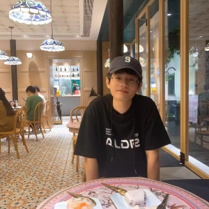

November 13, 2022
The molecular dynamics method is a technique to simulate the equilibrium state and
transport properties of the classical system, in which the particle motion law is Newtonian mechanics.
Quantum chemistry is a branch of theoretical chemistry and a basic science which applies the basic principles
and methods of quantum Quantum chemistry is a branch of theoretical chemistry and a basic science which applies
the basic principles and methods of quantum mechanics to study chemical problems. The research scope includes the
structure and properties of stable and unstable molecules and the relationship between the structure and properties;
Molecular to molecular interactions; The collision and reaction between molecules and other problems.

Personal Information & Research Experiment
Hi i'm Zekai Pereira Shen. I am currently studying Pharmacy Chemistry in China Pharmaceutical University. I am very interested in Quantum Chemistry Calculation and Molecular Dynamics Simulation, and have many practical experiences. I am mainly responsible for IGEM competition (International Genetically Engineered Machine) and iDEC (International Directed Evolution Competition). Molecular dynamics simulation and construction of molecular generative model framework, if you want to learn more about me, you can contact me by Twitter, Before, I thought that molecular generation could solve all the problems related to inhibitor screening, but later, when I gradually learned about the field of molecular generation and inhibitor screening, I found the advanced nature and great insufficiency of this aspect, which also changed. Some of my small opinions, so now I think that molecular generation has not yet reached a stable level that can solve inhibitor screening, but in the future, such methods must be the future.
Research Information 2019-2020
From 2020 to 2021, I participated in the school-level innovation and entrepreneurship training project "Synthesis of Bioorthogonal Reaction Original Tetrazines" and obtained the excellent conclusion of the school-level project. During this year, I participated in the first mathematical construction of American college students. Model Contest, the first National Mathematical Modeling Contest and Jiangsu Higher Mathematics Contest respectively won the H Prize, the third prize at the provincial level and the second prize at the provincial level. This year also stimulated my interest in chemical synthesis and the idea of further combining chemistry and mathematics to solve related problems. Also during this year, I first tried to compile a CPU-parallel version of amber20 that works on Windows using Cygwin and had posted it in Computational Chemistry Community
Research Information 2020-2021
From the 2020-2021 school year, I first participated in a Open Research Project "Permeability Of Small Drug Molecules On The Skin". During this research process, I learned about GROMACS and molecular dynamics simulation for the first time. My research on proteins and phospholipids I was deeply fascinated by the simulation process of molecules in the water environment. Finally, I did a (PMF) umbrella free energy sampling to explore the basic process and free energy change of ethanol small molecule penetration, so that the project was successfully ended. After that, I signed up to participate first iGEM and iDEC competition, and once again participated in the American College Students Mathematical Contest in Modeling (ICM track) and the Asia-Pacific Mathematical Contest in Modeling (APMCM). In 2021, i also participate in "9th Beijing Keyin GROMACS Training Seminar", in order to further understand the basic use process of GROMACS and some basic knowledge in the process of molecular dynamics simulation. During the year, as a member, I participated in the second provincial innovation training project "Protein Degradation Plastics Regulated by Mathematics And/Or/Not Gate Logic", and finally obtained the provincial excellent project conclusion. At this stage In the second half of the year, I was mainly responsible for the mathematical modeling part. In the second half of the year, I participated in the stimulating exploration of the lotus NCS enzyme for the stereoselectivity of small molecules. I was in charge of QMMM Simulation and Basic Dynamic Simulation in the research group of Associate Researcher Zhao Yucheng of China Pharmaceutical University.
Research Information 2021-2022
From 2021 to 2022, I will mainly focus my time on the iGEM and iDEC competitions. I am mainly responsible for the iDEC part, using simulations to improve the thermostability and structural stability of manganese peroxidase, and targeting at The active center of the enzyme was transformed with Rosetta, which also involved the calculation of the ectopic dominance of the enzyme protein and the construction and screening of the enzyme mutation library, which finally helped the team win the Best Target Small Molecule Award and the iGEM Gold Award. After that, I gradually learned Amber, ORCA, NAMD, ACEMD3, Desmond software, and did a simple related test for the calculation speed, focusing on FEP free energy calculation, and participated in the "2021 Nanjing University Theoretical and Computational Chemistry Summer Training" and obtained Outstanding Camper at the same time, I learned about languages such as CSS/HTML, Docker, Shell, etc., and in-depth study of the python language.
Research Information 2022-present
From the second half of 2022 to the present, I lead the new iDEC team VE_CPU as the captain to win the Bronze Award in the 2022 iDEC Competition, Best Software, Best Pathway Evolutionary Machines, The Most Potential Tool Winner, Best Algorithm winner and Best Presentation Nominee has won several awards. We have developed a model related to molecular generation. In the NOTES section below, we will introduce our model this year. You are welcome to understand and make comments. In the same year, I used manubot to sort out the literature related to molecular generation so far and put it together. It made a collection and put it on github. At the same time, as the main person in charge, he also led the team to participate in a school-level student's own innovative training project "Molecular Generation for Inhibitors Screening of Polq Enzyme", and participated in the summer vacation. Participated in the summer internship program in the laboratory of Mr. Huang Niu, Beijing Institute of Life Sciences, and met many outstanding predecessors, which broadened his horizons and strengthened his research direction on the path of molecular generation.
Awards
| Level |
Title |
Time |
| Gold Medal |
International Genetically Engineered Machine (iGEM). |
2021.11 |
| Best Target Molecule |
International Directed Evolution Competition (iDEC). |
2021.10 |
| First Price |
Asia Pacific Mathematical Contest Modeling (APMCM). |
2022.1 |
| Third Prize |
Asia Pacific Mathematical Contest Modeling (APMCM). |
2021.1 |
| Honorable Prize |
Mathematical Contest in Modeling/Interdisciplinary Contest in Modeling (MCM/ICM). |
2022.05 |
| Godel Medal |
Biology + National Life Science Competition. |
2021.10 |
| Bronze Medal |
International Directed Evolution Competition (iDEC). |
2022.10 |
| Second Prize |
Advanced Mathematics Competition for College students in Jiangsu Province. |
2021.4 |
| Outstanding Camper |
2021 Summer Camp of School of Theoretical and Computational Chemistry, Nanjing University. |
2021.7 |

In order to make it easier for me to know the progress of my tasks when I am far away from the computer, I have established a slurm cluster management system on the PC so that when the task is completed, I can be notified by email of the completion status.

Considering that some people do not have administrator rights on the supercomputing server, which makes it impossible to use computer resources reasonably. Therefore, the singularity gromacs version is launched to facilitate you to decompress and use it directly.
Considering that molecular generation will definitely become an important method for bioinhibitor screening in the future, but there is no unified list to organize the published literature on this aspect, so I used manubot to make a collection.
We mainly extracted the three-dimensional structure information of small molecules and the surface structure features of proteins to build such a neural network model and we also built a new model scoring function, you can visit the link below for specific details.
Software & Language
GROMACS, AMBER, NAMD, GAUSSIAN, ORCA, PYTHON, HTML/CSS, DOCKER, SHELL.